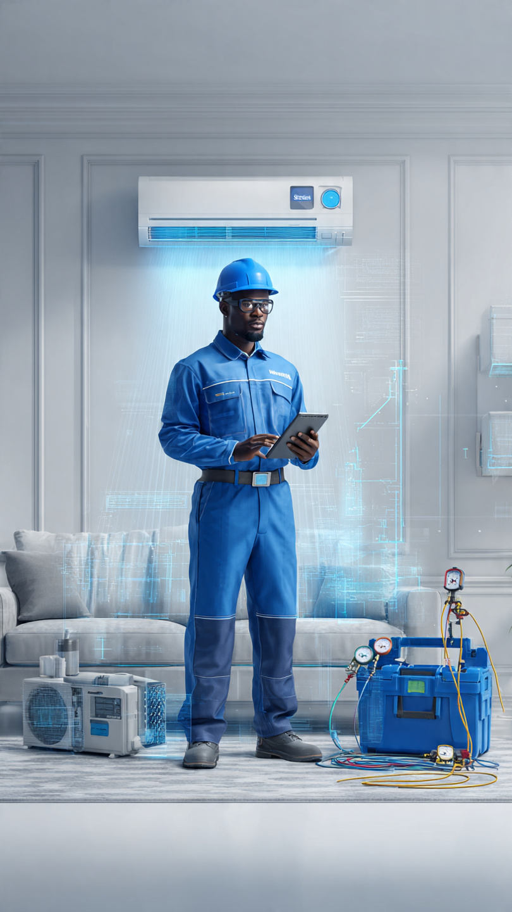

📘 Curso de Refrigeração Residencial
📘 Curso Intensivo: Diagnóstico e Reparação de AC Residencial
Objetivo: Capacitar profissionais e técnicos para diagnosticar, reparar e manter sistemas de ar condicionado residencial com base em normas internacionais e práticas reais de campo.
Para quem se destina: Técnicos de manutenção, eletricistas, instaladores, estudantes de engenharia e profissionais da climatização que desejam aprofundar seus conhecimentos em sistemas de refrigeração.
Duração: 3 semanas de estudo técnico + 1 semana de avaliação final (teórica e prática). Cada capítulo corresponde a 1 dia de formação intensiva.
Formato: Curso modular com conteúdo teórico e prático, diagramas, tabelas técnicas, exemplos reais e checklist de diagnóstico. Acesso otimizado para desktop e dispositivos móveis.

“Dominar a refrigeração é mais do que saber consertar — é entender o conforto, a eficiência e a segurança que cada sistema deve oferecer.”